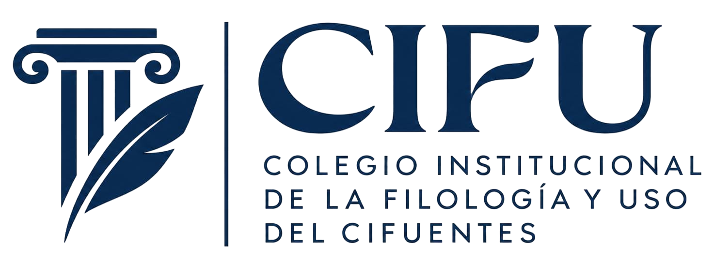

Le damos la bienvenida a la guía definitiva del vocabulario y lenguaje del cifuentes, donde encontrará usted de to.
Verbos mu campechanos, sustantivos mu propios de sí, y adjetivos bonicos del to.
Tamién encontrará usted expresiones y frases hechas que le ayudarán a integrarse en esta nuestra comunidad familiar.
Con esta guía no le faltará de na de na, sabrá más que su cuñao.
Este diccionario ha sido publicado por la C.I.F.U (Colegiado Institucional de la filología y uso del cifuentes)
